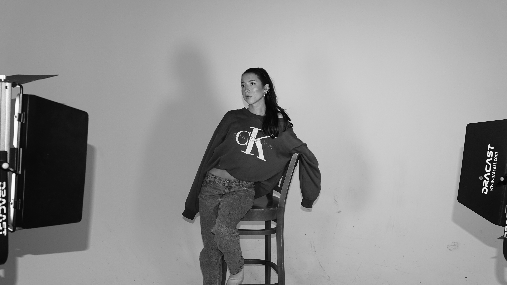

Journalism and history student at the University of Oklahoma with experience in reporting, editorial writing, and creative media production. I cover politics, lead editorial teams, and create content across print, digital, and broadcast — with a background that also spans performance and styling.
Currently Editor-in-Chief of The Campus Edit and a reporter for KGOU Radio (NPR). Previously reported from Capitol Hill as a Gaylord News intern. My acting and creative media work has been featured in two SAG-AFTRA films.
Download Resume Contact MeReports 2–3 original stories per week for statewide public radio. Hosts weekly news segments on Oklahoma politics and community under tight deadlines.
Leads editorial strategy and production for Norman's only fashion magazine. Manages a team of 30 and drove 300% growth in engagement through social media campaigns.
Reported from Capitol Hill covering congressional hearings and lawmaker interviews. Produced 2+ weekly stories translating federal policy for local Oklahoma audiences.
Contributed almost daily to the top-ranked broadcast program in the country. Operated video equipment for live news broadcasts and managed social media.
Editorial & Feature Writing, News & Political Reporting, Research & Fact-Checking, AP Style, Audio Production
Video Production & Editing, Adobe Software, Digital & Print Magazine Design, Social Media Content Creation
Public Relations, Spanish (Conversant), ASL (Beginner), Parsons x Teen Vogue: Fashion Industry Essentials